365일 점심시간 없이 진료
평일 매일 야간진료
오전 9시 ~ 저녁 8시
* 점심시간 없이 계속 진료합니다.
토 · 일 · 공휴일
오전 9시 ~ 오후 3시
* 점심시간 없이 계속 진료합니다.
한눈에 보기
더나은365한의원 한눈에 보기
더나은365한의원은 대구광역시 달서구 성서 이곡동(국민연금네거리 iM뱅크 이곡동지점 2층)에 있는 한의원입니다. 한의사 7명이 365일 점심시간 없이 진료하며, 평일은 저녁 8시, 토·일·공휴일은 오후 3시까지 진료합니다.
| 위치 | 대구광역시 달서구 계대동문로 124, 2층 (성서 이곡동, 국민연금네거리 iM뱅크 이곡동지점 2층) |
|---|---|
| 평일 진료 | 월–금 09:00 – 20:00 (매일 야간진료) |
| 주말 · 공휴일 | 토 · 일 · 공휴일 09:00 – 15:00 |
| 점심시간 | 없음 |
| 의료진 | 한의사 7명 (대표원장 유덕순) |
| 대표 진료 | 교통사고 후유증 · 통증치료 · 추나치료 · 다이어트 · 면역력(체질 보약) |
| 보험 | 교통사고 자동차보험 진료, 추나요법 건강보험 적용(조건에 따라) |
| 주차 | 무료주차 31대 (SUV 가능) |
| 대중교통 | 버스: 성서우방타운 건너편 하차 · 지하철: 2호선 성서산업단지역 8번 출구 도보 약 6분 |
| 전화 · 예약 | 053-581-0175 |
진료철학
유덕순 대표원장의 진료철학
眞心진심
진심으로 환자분들이 나았으면 좋겠습니다.
진심으로 더 나은 삶을 영위하셨으면 좋겠습니다.
그 목표를 이루기 위해 제가 할 수 있는 모든 걸 해보고 싶습니다.
疏通소통
의사 잘났다고 제 말만 하지 않습니다.
병원이라는 문턱을 넘어오셨다는 건 각양각색의 스토리가 있으실 겁니다.
어떤 마음으로 이곳을 찾게 되었는지, 그 마음의 소리까지 귀 기울여 듣겠습니다.
信賴신뢰
진심, 소통을 통하여
아픈 몸을 신뢰하는 마음으로 맡길 수 있도록 노력하겠습니다.
한의원 둘러보기
한의원 둘러보기 · 실제 진료 공간과 모습
연출이 아닌 더나은365한의원의 실제 진료 공간과 진료 장면입니다.
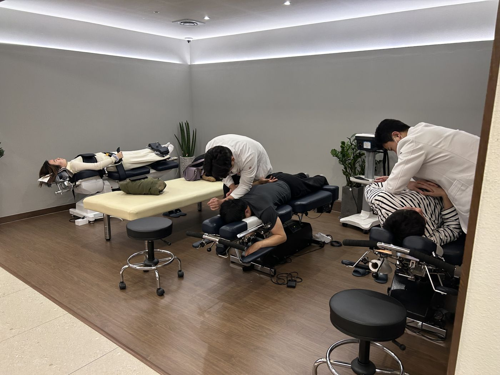
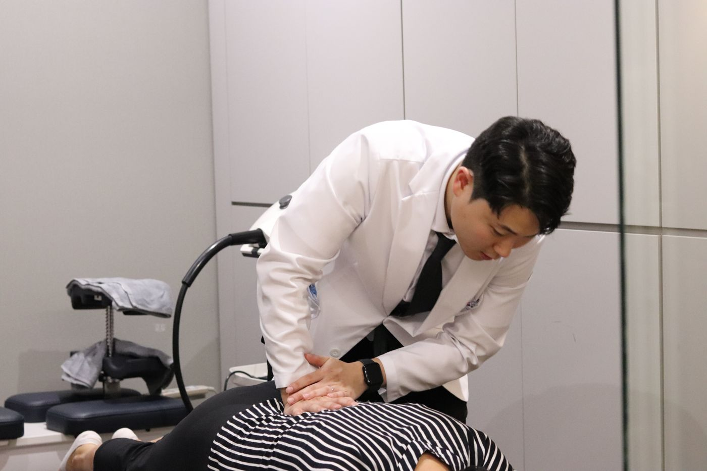
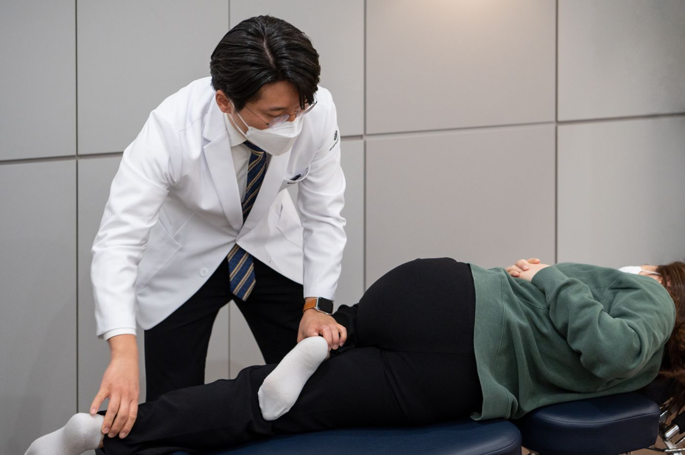
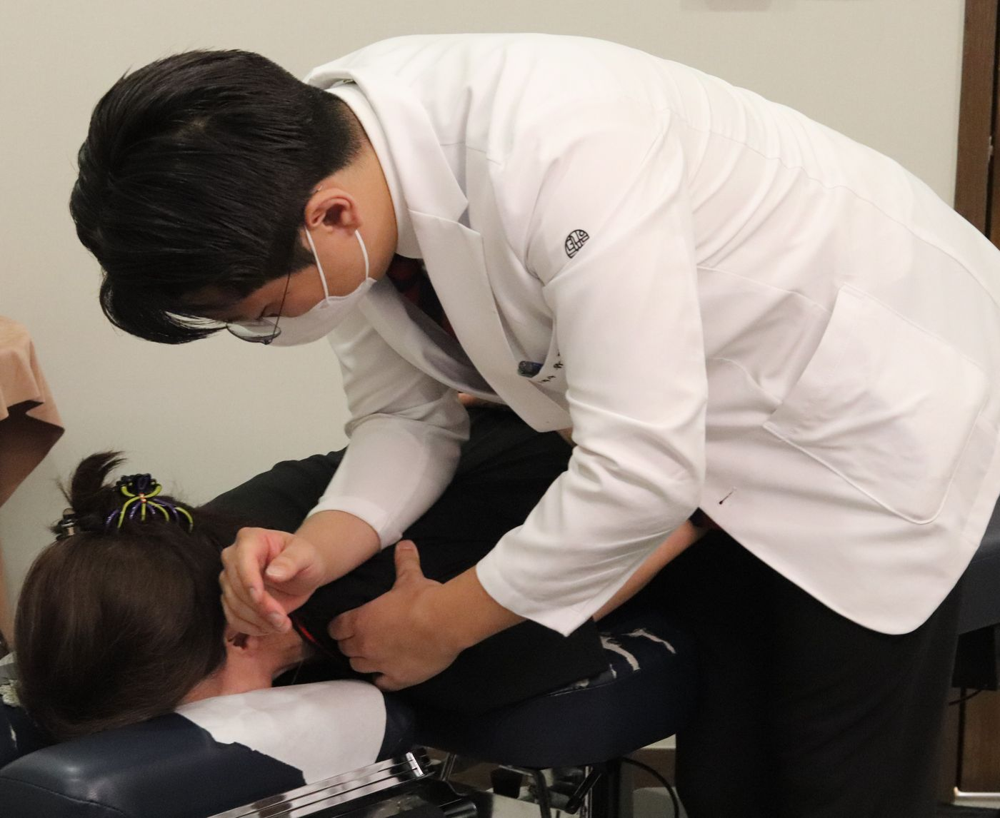
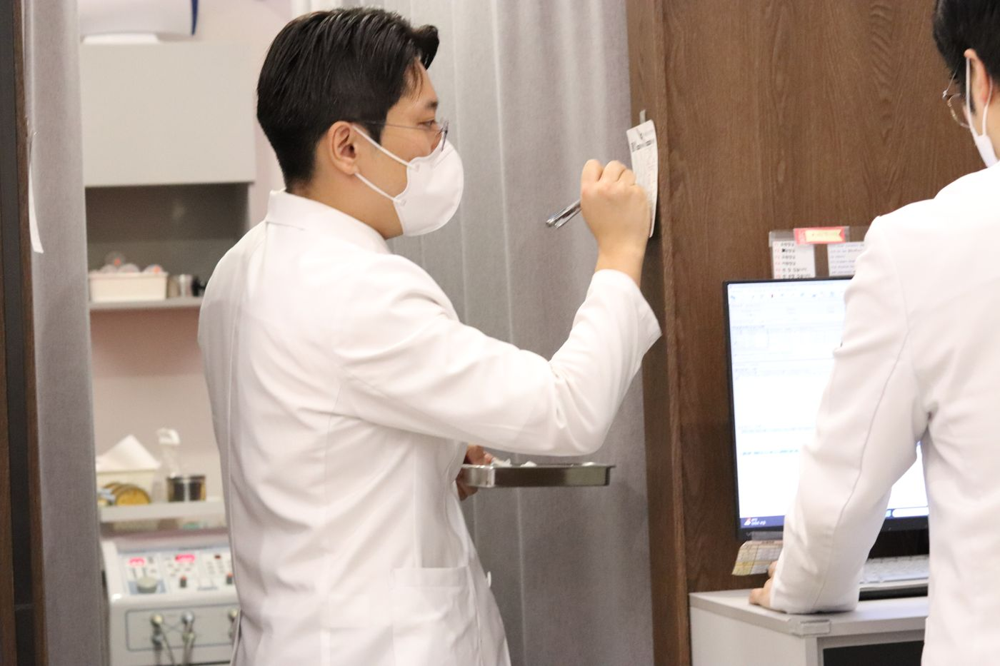
의료진
의료진 · 한의사 7명이 함께 진료합니다
성서이곡더나은365한의원
7명의
한의사
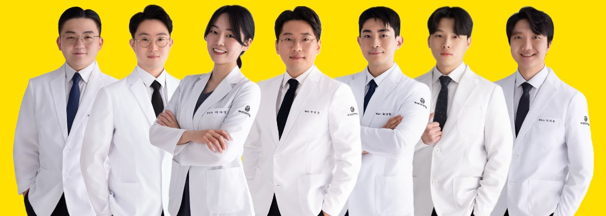
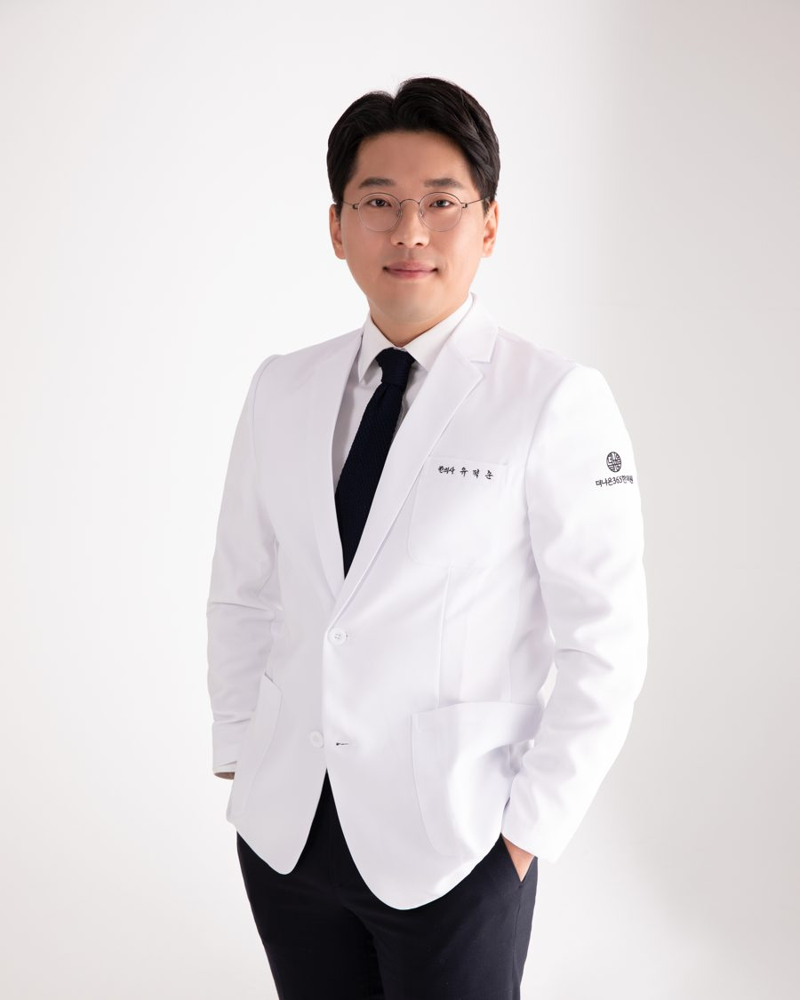
유덕순 대표원장
"아픈 곳만 보지 않고, 그 사람의 하루를 봅니다."
- (학력 입력)
- (경력·소속 학회 입력)
- 더나은365한의원 대표원장
평일 저녁과 주말에도 진료를 이어갑니다.
함께 진료하는 한의사
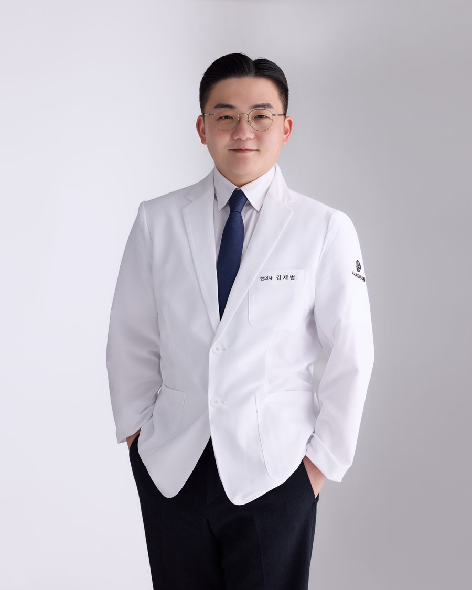
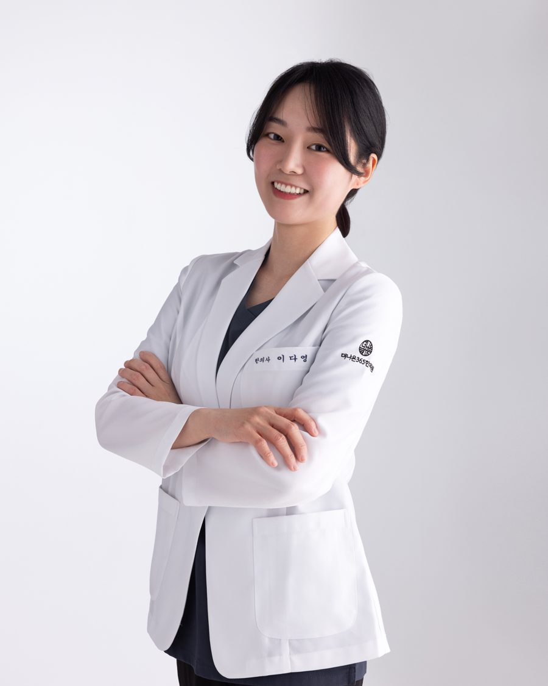
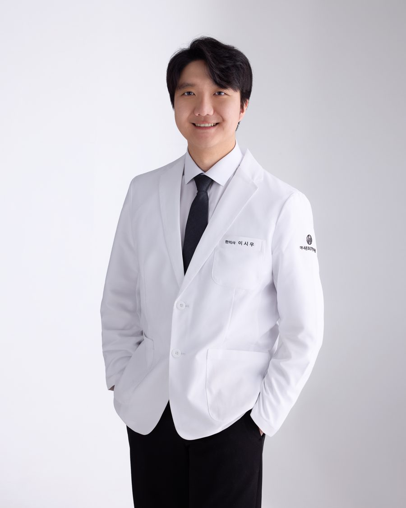
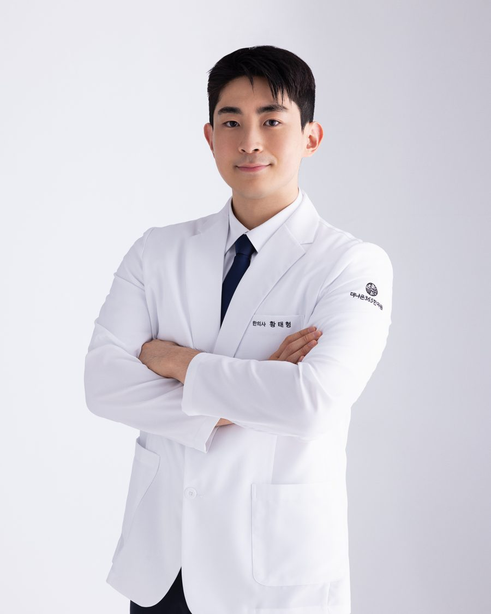
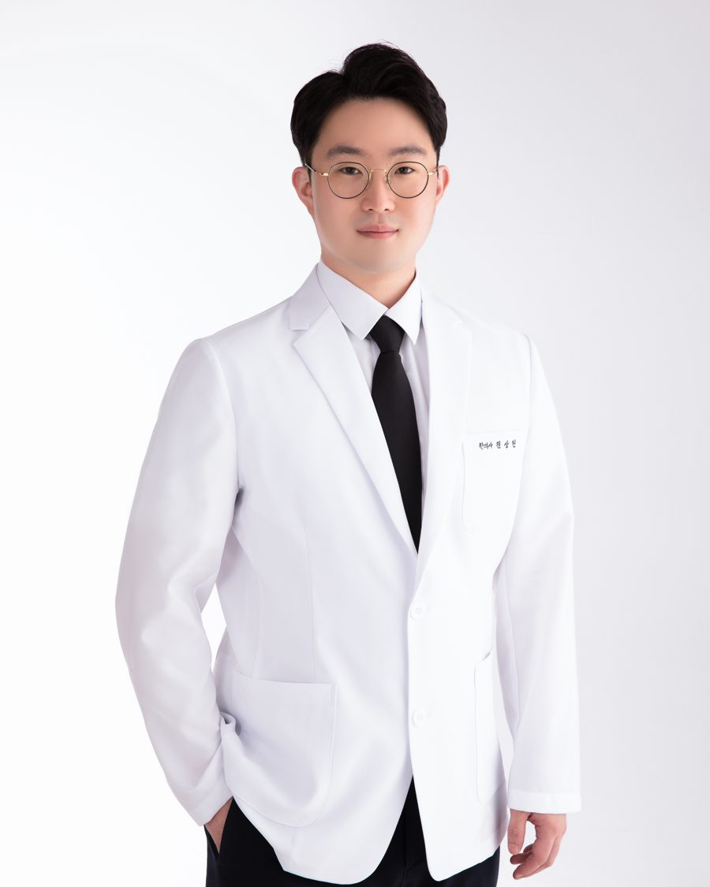
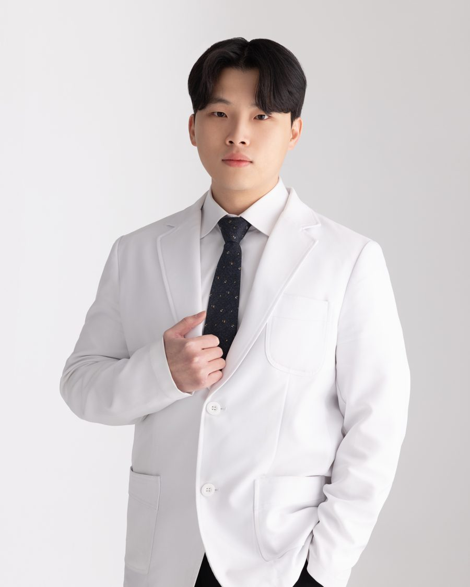
건강정보
진료실에서 자주 받는 질문, 글로 정리했습니다
- 추나
추나요법 건강보험 적용, 진료 전에 알아두면 좋은 것
추나요법은 2019년 4월부터 근골격계 질환에 건강보험이 적용됩니다. 적용 대상, 연간 횟수 한도, 본인부담금이 정해지는 방식과 진료 과정을 정리했습니다.
- 교통사고
교통사고 후 한의원 진료, 자동차보험 접수부터 첫 내원까지
교통사고 후 한의원에서 자동차보험으로 진료받는 순서를 정리했습니다. 보험사 접수번호 받기, 내원 시 준비물, 사고 후 늦게 나타나는 증상까지.
- 이용 안내
대구 성서 일요일·야간 진료 한의원 이용 안내
더나은365한의원의 평일 야간, 토·일·공휴일 진료시간과 주차, 버스·지하철 오시는 길을 정리했습니다. 점심시간 없이 365일 진료합니다.
자주 묻는 질문
더나은365한의원 자주 묻는 질문
일요일에도 진료하나요?
네. 토요일, 일요일, 공휴일 모두 오전 9시부터 오후 3시까지 진료합니다.
평일에는 몇 시까지 진료하나요?
평일(월–금)은 오전 9시부터 저녁 8시까지 매일 야간진료를 합니다.
점심시간이 있나요?
점심시간 없이 365일 계속 진료합니다.
주차할 수 있나요?
건물에 무료주차 31대가 가능하며 SUV도 주차할 수 있습니다. 건물 뒤편 주차장 입구로 들어오시면 주차 후 한의원으로 바로 연결됩니다.
대중교통으로는 어떻게 가나요?
버스는 성서우방타운 건너편 정류장에서 내리면 바로 앞 건물입니다(405, 503, 527, 564, 달서3, 달서5, 급행5). 지하철은 2호선 성서산업단지역 8번 출구에서 걸어서 약 6분입니다.
교통사고 치료도 자동차보험으로 받을 수 있나요?
네. 교통사고 후유증은 자동차보험으로 진료합니다. 접수할 때 보험사 접수번호를 알려주세요.
추나치료는 건강보험이 되나요?
추나요법은 조건에 따라 건강보험이 적용됩니다. 적용 여부와 본인부담금은 진료 때 안내해 드립니다.
예약은 어떻게 하나요?
전화 053-581-0175로 예약하거나 문의하실 수 있습니다.
안내
오시는 길 · 진료시간
진료시간 365일 · 점심시간 없음
| 평일 (월–금) | 09:00 – 20:00 |
|---|---|
| 토 · 일 · 공휴일 | 09:00 – 15:00 |
| 점심시간 | 없음 |
- 주소
- 대구광역시 달서구 계대동문로 124, 2층국민연금네거리, iM뱅크(대구은행) 이곡동지점 2층
- 전화
- 053-581-0175
- 주차
- 무료주차 31대 · SUV 가능건물 뒤편으로 돌아오시면 주차장 입구가 있고, 주차 후 한의원으로 바로 연결됩니다.
- 버스
- 성서우방타운 건너편 하차405 · 503 · 527 · 564 · 달서3 · 달서5 · 급행5
정류장 바로 앞 건물, 엘리베이터로 2층 - 지하철
- 2호선 성서산업단지역 8번 출구도보 약 6분